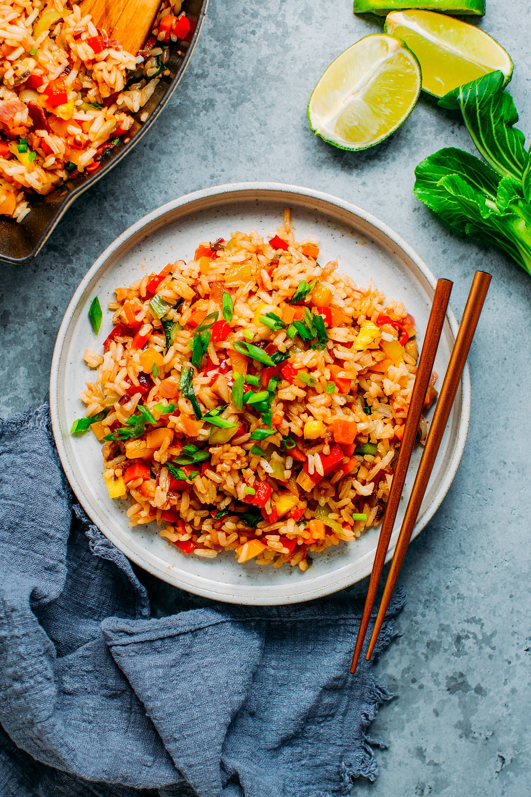

Fried Rice Goodness

Fried Rice
This recipe is one made from love and great ingredients.
I hope you enjoy this dish as much as my stomach did.
Ingredients
- Onion
- Chicken breast
- Chicken Broth
- Frozen stir-fry veges
- Cut all vegetables and set side
- Fry ginger and garlic 1-2 mins
- Add vegetables to fry-pan with oil, high heat
- Add meat and egg
- Serve when hot